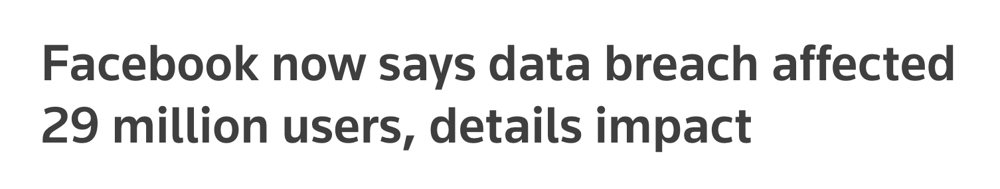
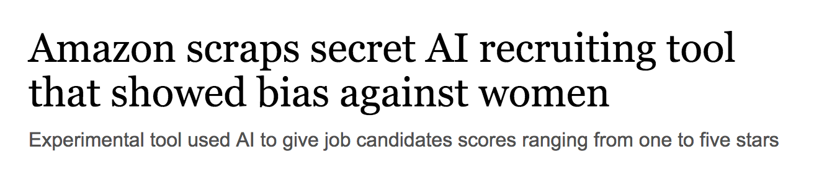
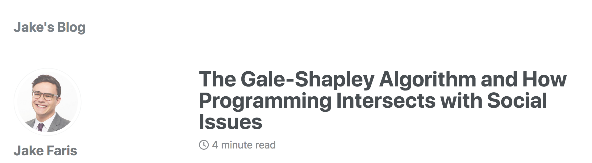
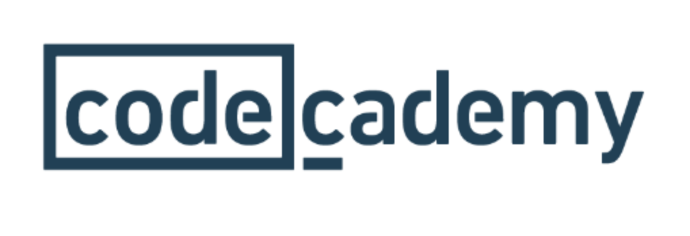

## So you know Djikstra's algorithm. Now what? <div style="background-color: rgba(0, 0, 0, 0.9); display:inline-block; color: #fff; padding: 20px;"> Jake Faris </div>
### A little about Me * Class of Conn College 2015 * Computer Science Major, Math Minor
* Full Stack Software Engineer * Ruby on Rails, EmberJS, PostgresDB * Internal Applications * Customer Relation Management Software * Phone Conferencing Software
* Software Engineer * Ruby on Rails, Golang, MongoDB * Internal & External Applications * Content Management Software * Video Processing Workflow
# Life in the Workforce
### What does it mean to be a good programmer in 2018?
#### What you might anticipate you’ll need... * Data Structures and Algorithms * Web Programming Knowledge * Data Science
## It’s not just knowing about how to code.
 
<div data-template style="background-color: rgba(0, 0, 0, 0.7); display:inline-block; color: #fff; padding: 20px;"> Programming is inherently a social activity. </div>
#### Interaction-Heavy Duties Include: * Standup <!-- * Daily meeting for team to check in and discuss work progress --> * Retros <!-- * Weekly meeting to reflect on team process --> * Pair Programming * Brown Bag Lunches
## Liberal Arts students have an advantage!
## How do you stand out as a candidate?
# Start a Blog!
* Let your voice be heard! * Share your thoughts on things you’re learning!
 #### One of my first blog posts was about algorithms! farisj.github.io
## It’s easy to get started * Free hosting on Github Pages * Tons of software that can help build your blog * Hugo & Jekyll
## Start a Side Project * Love Twitter? Make a Twitter Bot * Companies have free, public APIs * Google, Foursquare, Reddit, LinkedIn
### Contribute to Open Source * Public Code Freely Accessible on Github * Major Libraries * Easy ways to get started * Hacktoberfest * First Timers Only * Up For Grabs
## Supplement Your CS Education

## Conn College prepares you for programming in the real world.
### Knowing algorithms is really important, but knowing how to talk about them is important too!